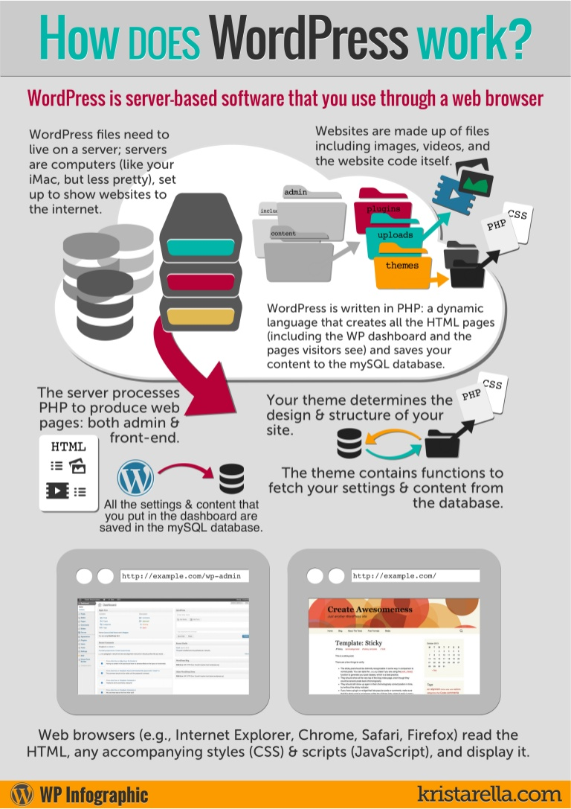

Day 2
Concepts
- WP Dashboard
- What is an Apache server
- Overview of MySQL
- Intro to phpMyAdmin
- Intro to PHP
WP Dashboard
Select English as your language of choice:
Site Title can be anything but for this class we will name it Geek WordPress. Unsername should be root. Password should be secret so we can easily remember it (NOTE: this is only for local test sites, not for client sites or live sites). Confirm the weak password. Lastly, enter your email.
Congrats! You have officially created a WordPress site.
What is an Apache server
Apache is the most widely used web server software. Developed and maintained by Apache Software Foundation, Apache is an open source software available for free. It runs on 67% of all webservers in the world. It is fast, reliable, and secure. It can be highly customized to meet the needs of many different environments by using extensions and modules. Most WordPress hosting providers use Apache as their web server software. However, WordPress can run on other web server software as well.
Overview of MySQL

MySQL is an open source relational database management system. It runs as a server and allows multiple users to manage and create numerous databases. It is a central component in the LAMP stack of open source web application software that is used to create websites. LAMP stands for Linux, Apache, MySQL, and PHP. Most WordPress installations use the LAMP stack because it is open source and works seamlessly with WordPress.
WordPress requires MySQL to store and retrieve all of its data including post content, user profiles, and custom post types. Most web hosting providers already have MySQL installed on their web servers as it is widely used in many open source web applications such as WordPress.
- wp_commentmeta : This table contains meta information about comments posted on a WordPress website. This table has four fields meta_id, comment_id, meta_key, and meta_value. Each meta_id is related to a comment_id. One example of comment meta information stored is the status of comment (approved, pending, trash, etc).
- wp_comments : As the name suggests this table contains your WordPress comments. It contains comment author name, url, email, comment, etc.
- wp_links : To manage blogrolls create by earlier versions of WordPress or the Link Manager plugin.
- wp_options : This table contains most of your WordPress site wide settings such as: site url, admin email, default category, posts per page, time format, and much much more. The options table is also used by numerous WordPress plugins to store plugin settings.
- wp_postmeta : This table contains meta information about your WordPress posts, pages, and custom post types. Example of post meta information would be which template to use to display a page, custom fields, etc. Some plugins would also use this table to store plugin data such as WordPress SEO information.
- wp_posts : The name says posts but actually this table contains all post types or should we say content types. This table contains all your posts, pages, revisions, and custom post types.
- wp_terms : WordPress has a powerful taxonomy system that allows you to organize your content. Individual taxonomy items are called terms and they are stored in this table. Example, your WordPress categories and tags are taxonomies, and each category and tag inside them is a term.
- wp_term_relationships : This table manages relationship of WordPress post types with terms in wp_terms table. For example this is the table that helps WordPress determine post X is in Y category.
- wp_term_taxonomy : This table defines taxonomies for terms defined in wp_terms table. For example if you have a term “WordPress Tutorials“, then this table contains the data that says it is associated with a taxonomy categories. In short this table has the data that helps WordPress differentiate between which term is a category, which is a tag, etc.
- wp_usermeta : Contains meta information about Users on your website.
- wp_users : Contains User information like username, password, user email, etc.
Intro to phpMyAdmin
phpMyAdmin is an open source software that provides a web based graphical user interface to manage your mySQL database. Most WordPress hosting providers have phpMyAdmin installed in their control panel. This allows users to easily access the database and perform common database management tasks.
You can access your website's phpMyAdmin by going to https://mydomain.com/phpmyadmin
// ** MySQL settings - You can get this info from your web host ** //
/** The name of the database for WordPress */
define('DB_NAME', 'database_name_here');
/** MySQL database username */
define('DB_USER', 'username_here');
/** MySQL database password */
define('DB_PASSWORD', 'password_here');
/** MySQL hostname */
define('DB_HOST', 'localhost');
/** Database Charset to use in creating database tables. */
define('DB_CHARSET', 'utf8');
/** The Database Collate type. Don't change this if in doubt. */
define('DB_COLLATE', '');
Intro to PHP
WordPress uses the PHP programming language to store and retrieve data from the MySQL database. To retrieve data from the database, WordPress runs SQL queries to dynamically generate content. SQL stands for Structured Query Language and is the programming language typically used to query databases.
Nice, but what does that mean? An example:
Quote of the Day
- “The computing scientist’s main challenge is not to get confused by the complexities of his own making. ”
- - E. W. Dijkstra